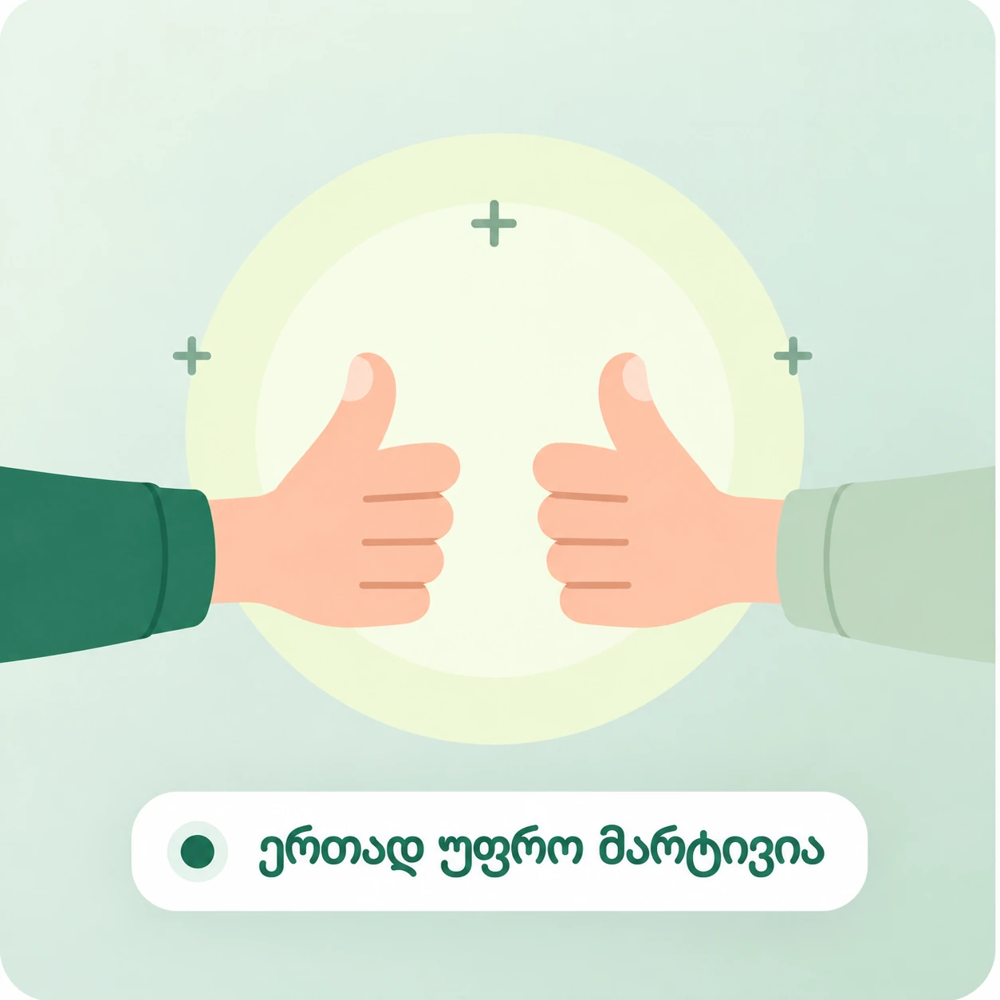

აირჩიე რას ეძებ
სამუშაოს ეძებ თუ კონკრეტული საქმისთვის ადამიანს.
სამუშაოს ეძებ თუ დახმარება გჭირდება?
აქ ორივე მხარე მარტივად პოულობს ერთმანეთს.

სამუშაოს ეძებ თუ კონკრეტული საქმისთვის ადამიანს.
მიუთითე ქალაქი, თარიღი და საჭირო დეტალები.
შეათანხმე საქმე და ანაზღაურება პირდაპირ.